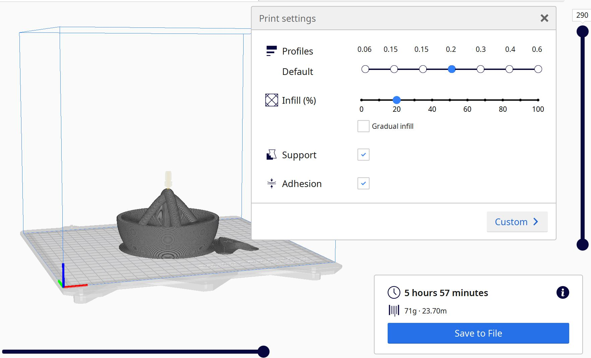

Verkefni 3
3D prentun

Markmið verkefnisins var að hanna módel fyrir 3D prentun sem ekki væri hægt að framkvæma með frádráttar framleiðslu og prenta svo hlutinn. Einnig átti að 3D skanna einhvern hlut t.d. með photogrammetríu. Fyrst þegar ég byrjaði að skoða verkefnið ákvað ég að teikna upp myndakassa fyrir polaroid myndir. Ég hinsvegar komst að því að það væri of viðamikið verkefni svo ég ákvað að breyta um verkefni. Ofan á kassanum mínum hafði ég teiknað Star Trek merkið og ég ákvað að halda því inn í verkefninu mínu upp á gamanið.

Þegar ég fór að leita mér að nýju verkefni ákvað ég að leita til Google að hugmynd. Ég fann þennan link og ákvað að draga innblástur frá þessu verkefni. Í dæminu sem ég fann á netinu er þetta safapressa sem hægt er að skrúfa á flösku, mér fannst hinsvegar óþarfi að hafa þann fítus af því að þegar ég pressa mér safa þá er það aldrei meira en bara í eitt glas. Ég ákvað því að breyta botninunum og láta hann passa á glas frekar en flösku. Ég ákvað líka að hafa bara fjóra stuðla frekar en átta, þar sem mér fannst ekki þörf á fleiri en 4. Ég teiknaði og hannaði því verkefnið sjálf með innblæstri frá þessu verkefni.
Ég byrjaði á því að teikna upp hálfhring og skáplötuna sem gera grunninn að safapressunni eins og má sjá á mynd hér að ofan. Ég revolveaði svo sketchinu og fékk þá grunninn. Næsti hluti verkefnisins reyndist talsvert erfiðari. Ég teiknaði átta hringi á skálina og teiknaði svo feril til að extruda hringjunum. Ég hafði hringina átta af því að upprunalega vildi ég hafa átta stuðla. Á mynd hér að neðan má sjá sketchið fyrir hringina og ferlana. Ég notaði sweep til að extrudea hringjunum en þegar hringirnir lágu á skálinni fékk ég sweepið aldrei til þess að fara alla leið. Ég lagaði það með því að teikna hringina fyrir neðan skálina og fara því stuðlarnir aðeins í gegnum skálina. Það er ekki fullkomin lausn en er betra en að stuðlarnir nái ekki alla leið.
Nú var safapressan tilbúin og þá komið að skemmtilega hlutanum. Ég ákvað að laga Star Trek merkið sem ég teiknaði fyrir kassann og teikna það aftur. Ég setti inn canvas með mynd af merkinu og notaði spline til þess að teikna upp merkið. Ég extrudeaði merkinu og extrudeaði aðeins lengra brúnunum og stjörnunni á miðju merkinu. Á mynd hér að neðan má sjá merkið teiknað í Fusion.
Þegar báðar teikningar voru tilbúnar var komin tími á setja þetta upp í Cura. Ég exportaði fileunum sem stl file sem tók nokkrar mínútur og opnaði þær svo í Cura. Ég stillti profile á 0.2 og innfill á 20% og sliceaði. Prentuni tók tæpa 6 tíma og og tók 71g af plasti. Ég var með support og adhesion valið. Það þurfti mikinn stuðning undir skálina og svo smá stuðning undir stuðlana. Þegar búið var að prenta fjarlægði ég adhesionið og supportið. Það að fjarlægja supportið reyndist hisnvegar það erfiðasta við verkefnið þar sem hluti af stuðningnum er undir skálinni og erfitt að ná taki á honum til að rífa hann frá. Það reyndist líka erfitt að ná öllum stuðningum almennilega frá í heilulagi og ná öllum litlu bitunum.
Safapressan er prentuð með PLA efni. þar sem hún er ætluð til að vinna mat þarf að huga að því hvort PLA sé öruggt með mat. Eftir miklar rannsóknir er niðurstaðan sú að PLA er Generally Recognized as Safe (GRAS) þegar það er notað með mat en PLA getu lekið litlu magni af lactic acid í matinn. Þetta ætti því ekki að valda vandræðum hjá mér en það væri vert að skoða betur hvaða efni eru í boði ef verkefnið væri endurtekið og þá hægt að finna efni sem er öruggara með mat. Það væri einnig vert að skoða hvort hægt væri að velja stuðning sem er leystur upp en ekki rifinn í burtu þar sem eins og er gætu agnir af stuðningum dottið í glasið og hefur það reynst óþarflega erfitt að hreinsa stuðninginn vel í burtu.
Prentun á Star Trek merkinu gekk mjög vel, þar hinsvegar lenti ég í svipuðum vandamálum með support en það reyndist leiðinelga erfitt að ná support af neðri hliðinni þar sem erfitt reyndist að ná taki á supportinu til að fjarlægja það.
Seinni hluti verkefnisins var að 3D skanna hlut. Ég gerði það með því að sækja appið Qlone, prenta út mottu fyrir það og skanna svo inn hlutinn. Þetta gekk frekar vel en var þó nokkuð hægt í framkvæmd. Ég reyndi líka að skanna hlutinn á tvo vegu en fékk þá verri niðurstöðu svo ég hætti við það. Ég endaði á að skanna inn fígúru af Argus Filch úr Harry Potter. Ég notaði ipadin minn til þess að skanna, hann er ekki með bestu myndavélina svo myndin er pínu brengluð en það er hægt að sjá að þetta á að vera Filch.